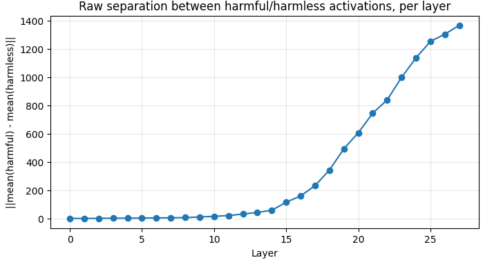

Refusal is mediated by a single direction — and Qwen3-1.7B appears to have one too
A replication of Arditi et al. (2024) on a model released after the original paper. One direction in the residual stream, found from 32 harmful and 32 harmless examples, cuts refusals on 100 held-out harmful prompts from 81% to 4% when removed, while the refusal rate on harmless prompts stays at 0%.
The claim being tested
Chat models are fine-tuned to refuse harmful requests. Arditi et al. showed that across 13 open-source models, this refusal behavior collapses onto a single direction in the residual stream — not a distributed, hard-to-locate circuit. Erase that one direction and the model stops refusing. Add it back and the model refuses even harmless prompts.
The original paper tested 13 models up to 72B parameters. Qwen3 was released after that work. This project asks a direct question: does the same one-dimensional structure show up in a model the paper never saw?
Method
Collect contrastive activations
32 harmful instructions (AdvBench) and 32 harmless instructions (Alpaca) are run through the model. At every one of the 28 layers, the residual stream activation at the last prompt token is cached — the position immediately before the model starts generating a response.
Compute a candidate direction per layer
direction = mean(harmful_activations) − mean(harmless_activations), normalized to unit length. This gives 28 candidate directions, one per layer, each a hypothesis for "where refusal lives."
Ablate each candidate and measure the effect
For each layer's direction, the residual stream is projected orthogonal to it — x′ = x − (x·d)d — at every layer, so no later layer can simply re-write the erased signal. The non-refusal rate (called "jailbreak rate" below) on held-out harmful prompts and the refusal rate on held-out harmless prompts are measured for each candidate. A response counts as a refusal if it contains refusal phrases such as "I can't" or "I'm sorry"; this is a simple keyword detector (see Limitations).
Select the winning layer, confirm on a fresh test set
The best layer is chosen by validation performance alone. Final numbers are then measured on a completely separate test set that played no role in the selection — the standard the results below hold to.
Finding the direction
Before testing whether any of the 28 candidate directions actually control refusal, it's worth checking whether harmful and harmless prompts are even represented differently inside the model in the first place. If they weren't, there'd be nothing to find.

This is a first sanity check: the two prompt types are represented differently in later layers. The question becomes which layer's direction is causally responsible for refusal, versus which is just correlated with the prompt category.
This graph is consistent with refusal-related information showing up late in the model, which is what Arditi et al. would predict. It is not causal evidence, and because raw norms grow with depth anyway, it should not be read as proof. The ablation sweep in the next section is what tests causality.
Selecting the layer
Correlation isn't causation. Each of the 28 candidate directions was ablated in turn, and the model's behavior was measured on held-out validation prompts — 32 harmful, 32 harmless — that were not used to construct the directions.

Show raw per-layer sweep data (28 layers)
| Layer | Jailbreak rate | Harmless refusal rate |
|---|---|---|
| 0 | 0.50 | 0.00 |
| 1 | 0.70 | 0.00 |
| 2 | 0.40 | 0.00 |
| 3 | 0.50 | 0.00 |
| 4 | 0.40 | 0.00 |
| 5 | 0.40 | 0.00 |
| 6 | 0.30 | 0.00 |
| 7 | 0.20 | 0.00 |
| 8 | 0.30 | 0.00 |
| 9 | 0.10 | 0.00 |
| 10 | 0.80 | 0.00 |
| 11 | 0.80 | 0.00 |
| 12 | 1.00 | 0.00 |
| 13 | 1.00 | 0.00 |
| 14 | 1.00 | 0.00 |
| 15 | 1.00 | 0.00 |
| 16 | 1.00 | 0.00 |
| 17 | 1.00 | 0.00 |
| 18 | 1.00 | 0.00 |
| 19 | 1.00 | 0.00 |
| 20 | 1.00 | 0.00 |
| 21 | 1.00 | 0.00 |
| 22 | 1.00 | 0.00 |
| 23 | 1.00 | 0.00 |
| 24 | 1.00 | 0.00 |
| 25 | 1.00 | 0.00 |
| 26 | 1.00 | 0.00 |
| 27 | 1.00 | 0.00 |
Layers 12 to 27 all reach 100% on validation, so validation cannot tell them apart. Layer 12 was selected as the earliest layer reaching that ceiling, then re-verified on the full validation set (32/32 harmful, 32/32 harmless) before being locked in for the held-out test. It is the earliest layer that works, not a finely tuned optimum.
Results on the held-out test set
These numbers come from 100 harmful and 100 harmless test prompts that were never touched during layer selection. Refusals are detected by keyword matching (see Limitations).
| Condition | Harmful test refusal | Harmless test refusal |
|---|---|---|
| Baseline (no intervention) | 81.0% | 0.0% |
| Direction ablated (layer 12) | 4.0% | 0.0% |
Refusals on harmful prompts dropped from 81% to 4%. Put the other way, the share of harmful prompts answered without refusal keywords rose from 19% to 96%. Refusal on harmless prompts stayed at 0%. With 100 prompts per condition, approximate 95% intervals are 72–88% for the baseline harmful refusal rate and 2–10% for the ablated one.
Example: same prompt, one direction removed
Note: this ablated output still lectures and redirects, but it contains no refusal keywords, so a keyword detector counts it as "not refusing". This is why compliance needs to be graded separately.
- Baseline: the normal model refuses to create the virus.
- Direction ablated: with the refusal direction removed, the model drops its refusal phrasing and begins a conceptual description of the virus. Examples are shown truncated and non-operational on purpose.
The other direction: inducing refusal
The paper's second claim is symmetric: adding the direction back, scaled up, should make the model refuse even harmless prompts. This part of the replication did not go as cleanly — and that's worth reporting exactly as it happened rather than smoothing it over.
| Coefficient | Induced refusal rate (keyword detector) |
|---|---|
| 4 | 100% |
| 8 | 0% |
| 12 | 0% |
| 16 | 0% |
At coefficient 8, the refusal-keyword detector reports 0% refusals — but the completions are not coherent, on-topic answers either. They degenerate into repeated fragments like "SECURITY POLICY," "SOFTWARE DEVELOPMENT," "NOT AUTHORIZED" regardless of the prompt topic:
The keyword-based refusal detector was tuned for natural refusal language ("I can't," "I'm sorry") and never encountered this failure mode, so it silently misclassified degeneration as compliance. At coefficient 4 the detector reports a 100% induced refusal rate, which appears to reflect real refusals, but the completions at that value should be read to confirm it. Higher coefficients overwhelm the residual stream and break coherence rather than cleanly steering behavior. This suggests activation addition is very sensitive to scale, and it means this half of the original claim is only partly reproduced here. A finer sweep between 4 and 8 is needed.
Limitations
- Refusal is detected by keyword matching. "Not refusing" is not the same as giving a harmful answer. Compliance has not been graded manually or with a classifier, so the 4% figure means "few refusal keywords", not "confirmed harmful compliance".
- Small and single-run. 32 + 32 prompts to find the direction, 32 + 32 for validation, 100 + 100 for testing, one model, one run.
- Capability preservation was not measured. Only the refusal rate on harmless prompts was checked. Nothing here shows that general ability is unchanged.
- Validation saturates. Layers 12–27 all reach 100%, and the no-intervention baseline on validation is not plotted.
- Activation addition was swept coarsely and judged with the same keyword detector.
Why this matters
Refusal can be switched off by a simple intervention
Refusals dropping from 81% to 4% when one direction is removed suggests that, in this model, refusal behavior is concentrated enough to be turned off by an identifiable edit. Whether this means safety training is shallow more broadly needs more evidence.
Consistent with the original finding
Qwen3-1.7B wasn't part of Arditi et al.'s original test set. Finding the same one-dimensional structure here is one more data point consistent with the original paper. It does not show that all chat models behave this way.
A small set of examples was enough
No fine-tuning, no gradient descent, no large dataset — a mean difference over 32 contrastive prompts was sufficient to locate a direction whose removal cut refusals on a 100-prompt held-out test set.
Interpretability tools can expose vulnerabilities
This is a white-box intervention with no adversarial suffix and no prompt engineering — just a linear algebra operation on the residual stream. It illustrates why understanding model internals matters for building models that are robustly safe rather than superficially safe.